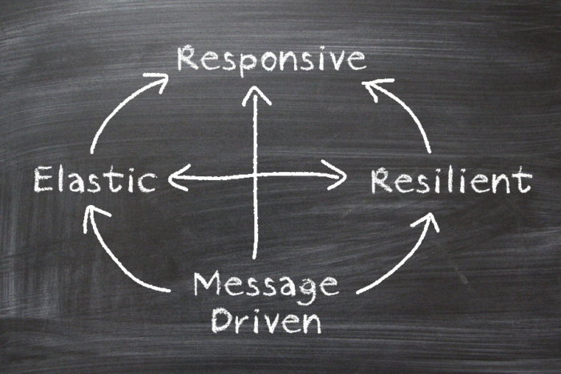
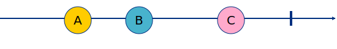
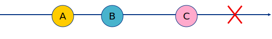
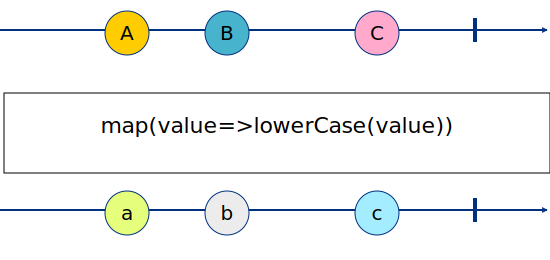
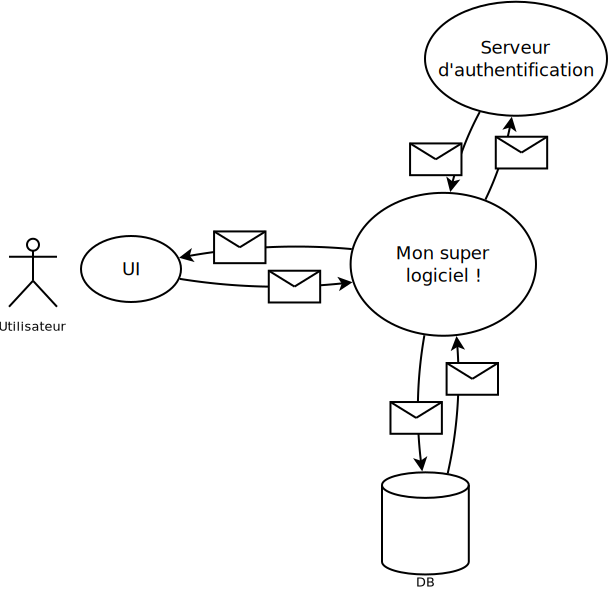
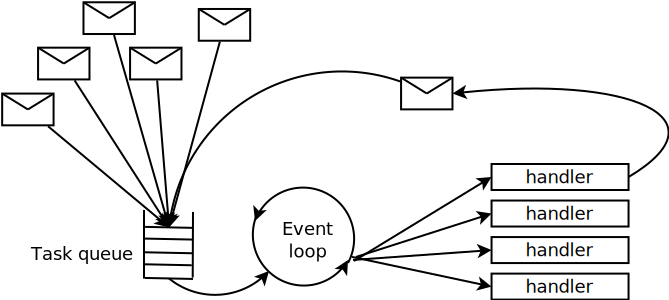
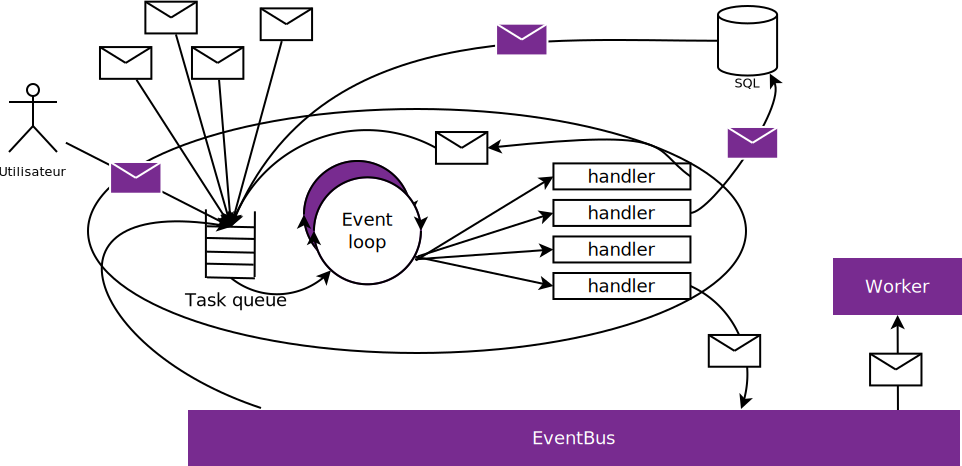

Hajime !

Asynchrone

Le monde est asynchrone
Le monde est asynchrone
Reactive manifesto
Message driven
Resilient
Elastic
Responsive

Programmation reactive

Comment modéliser un flux de données ?
Marble diagrams
Stream simple
Stream avec erreur
Stream avec opération
Et en RX ?
Observable.of('A','B','C')
.map(value => value.toLowerCase())
.subscribe(value => console.log(value));Result
'a'
'b'
'c'Classe principales
Observableau quel on souscritObserverobject qui souscrit à l'ObservableonNext()onCompleted()onError()
- Subscription permet de gérer les sousscription
Mais pourquoi faire ça ?
- Eviter le callback hell
- Gérer des évenemements multiples
- Avoir une approche déclarative
- Promouvoir la programmation fonctionnelle
Mais à quel point est-ce puissant ?
Example 1 : Afficher une horloge
@Component({
selector: 'async-observable-pipe',
template: '<div>Time: {{ time | async }}</div>'
})
export class AsyncExample {
time = new Observable((observer) => {
setInterval(() =>{
return observer.next(new Date().toString()), 1000);
}
});
}eazy peazy
Example 2 : Gérer les doubles clicks
let clickStream
= Rx.Observable.fromEvent(document, 'click');
clickStream
.buffer(clickStream.debounce(250))
.map(list => list.length)
.filter(x => x === 2)
.subscribe(() => console.log('doubleclick'))eazy peazy
Conseils
- Distinguez Rx des autres API de stream
- Peut devenir complexe → expérimentez !
- N'ayez pas peur de la doc de Rx ! (example exhaust)
Système réactif

Pourquoi ?

Kezako?
Kezako?
Pattern reactor
NE JAMAIS BLOQUER L'EVENT LOOP!
Implémentation front : Redux

Intérêts

Intérêts
- Simplicité de l'état de l'application
- Possibilité de rejouer les évènements
- Utilisation de fonctions pures pour la logique métier
Implémentation back: Vertx
Intérêts
- montée en charge
- souplesse architecturale
REX/Conseils
- NE JAMAIS BLOQUER L'EVENT LOOP!
- Attention aux backpressures
- Garder un œil sur les threads utilisés
- Les tests d'intégration
Conclusion
- Changement fort de paradigme
- S'intégre parfaitement avec CQRS/ES
- Bon levier technique pour l'architecture hexagonale
- Outillage varié et « à la mode » et très puissants
- Message broker
- Base de données NoSQL
- …
Liens intéressants
References
- Example du bouble click : https://gist.github.com/mauriciosoares/5f7d185e900a23895e24
- Example du pipe de l'horloge : https://angular.io/api/common/AsyncPipe
Pour aller plus loin
- Functional Reactive Programming
- Système à Actor (comme Akka ou Erlang)
- Green thread (go)
Questions ?

Licence
Pour ce qui concerne tous les contenus que nous avons produits dans cette présentation :
Devenez ceinture noire de système réactif de Viseo - Abel Aoun & Michel Barret est mis à disposition selon les termes de la licence Creative Commons Attribution - Pas d’Utilisation Commerciale 4.0 International.
Fondé(e) sur une œuvre à https://github.com/barmic-slides/vtah-reactive.git.